Ferramentas
inteligentes
para seus dispositivos.
Sites e aplicativos gratuitos que resolvem problemas reais do dia a dia. O CopieECole já está disponível; TelaDesk e AjusteHD estão em desenvolvimento.
Um WhatsApp para seus dispositivos, não para pessoas. Envie textos, links, fotos e arquivos entre computadores, celulares e tablets pelo navegador.
VozDigitada
DisponívelTransforme sua voz em texto no campo ativo de qualquer programa. Atalhos de teclado, Enter automático, dicionário inteligente e balão flutuante.
DriverStatus
DisponívelDiagnostica drivers do seu PC, identifica problemas e sugere soluções. Integra com Windows Update, backup de drivers e facilita a interação com a IA.
TelaDesk
Em desenvolvimentoUma alternativa ao AnyDesk para acesso remoto protegido pela rede local ou internet, com conexão por código ou convite, controle da tela e transferência de arquivos.
AjusteHD
Em desenvolvimentoOrganize o espaço dos discos com visão do antes e depois. Transfira espaço, reduza, crie ou remova partições com proteções e confirmação.
Em breve...
DesenvolvimentoNovo aplicativo em desenvolvimento. Fique atento para novidades!
De problemas reais, nascem soluções reais
Sou programador e crio ferramentas que eu mesmo uso no dia a dia. Quando encontro um problema que não tem boa solução gratuita, eu construo uma.
O VozDigitada nasceu porque eu precisava ditar texto sem pagar assinatura — um app simples que transforma voz em texto em qualquer programa, com Enter automático e comandos de voz.
O DriverStatus nasceu porque diagnosticar drivers no Windows é frustrante — um app que escaneia o hardware, identifica problemas e facilita a busca pela solução certa, inclusive com IA.
Todas as minhas ferramentas são 100% gratuitas, sem anúncios, sem coleta de dados. Feitas por quem realmente usa, para quem realmente precisa.
❤️ Gostou? Apoie o projeto!
Todas as ferramentas são 100% gratuitas e sem anúncios.
Se elas te ajudam no dia a dia, considere fazer uma doação de qualquer valor.
Pix
Use o Pix copia e cola pelo botão abaixo.
Cartão de Crédito / Débito
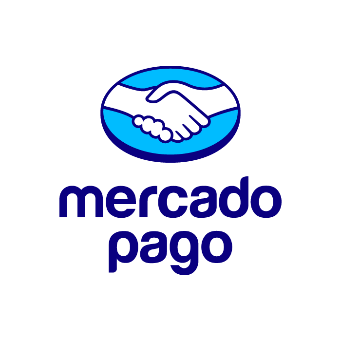
Pagamento seguro via Mercado Pago.
Você será redirecionado para o site oficial.
PayPal
Pagamento seguro via PayPal.
Você será redirecionado para o site oficial.
Fale Comigo
Meu objetivo é criar ferramentas que melhorem seu dia a dia.
Se tiver alguma dúvida, sugestão ou precisar de ajuda,
ficarei feliz em responder!
Transforme sua voz em texto
instantaneamente.
O VozDigitada transforma sua voz em texto no campo ativo de qualquer programa. Pressione um atalho para gravar e o texto aparece no aplicativo original. Tem Enter automático, microfone sempre ligado, comandos de voz, dicionário inteligente e um balão flutuante que mostra o status.
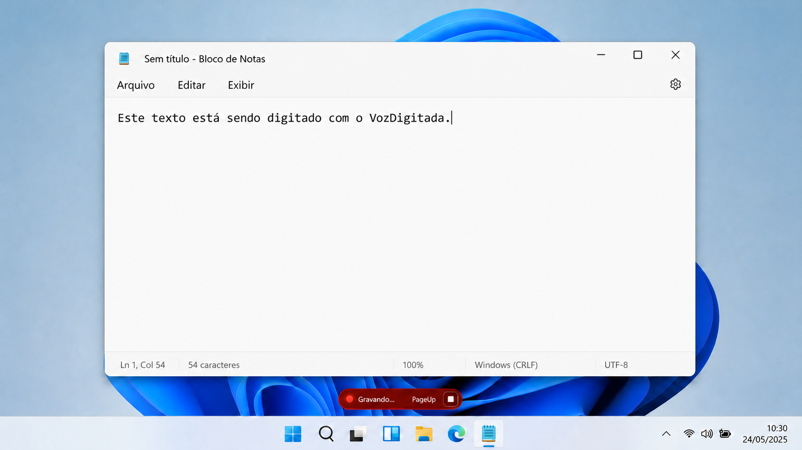
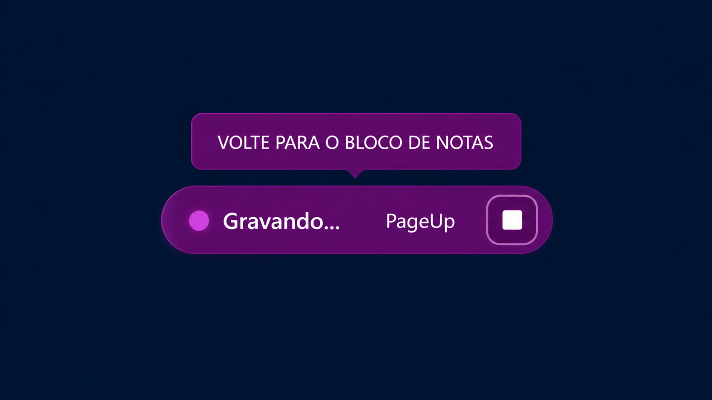
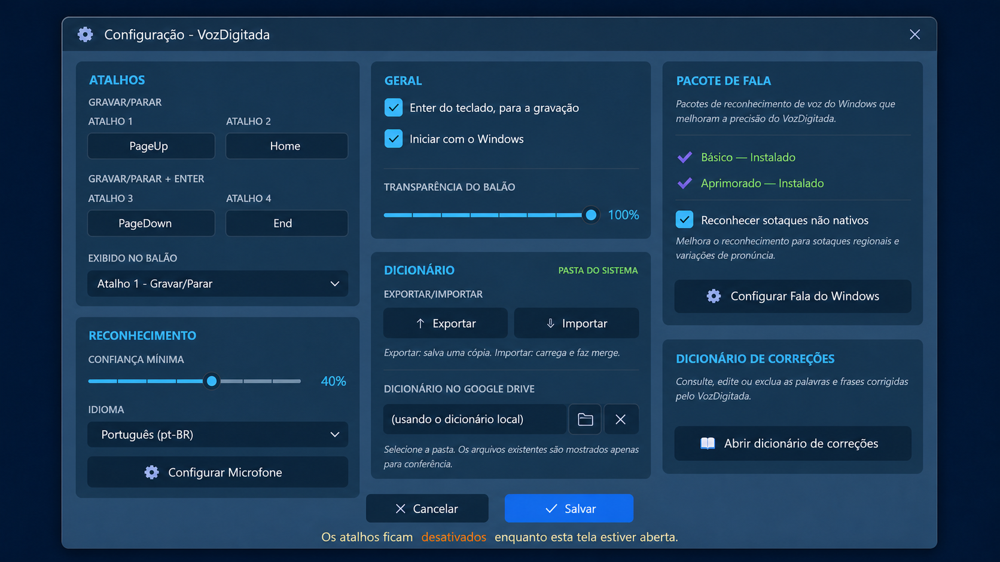
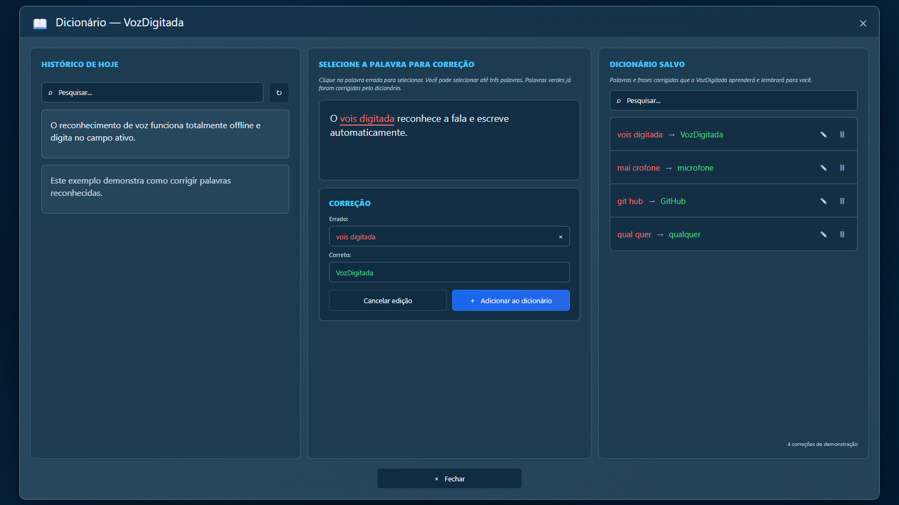
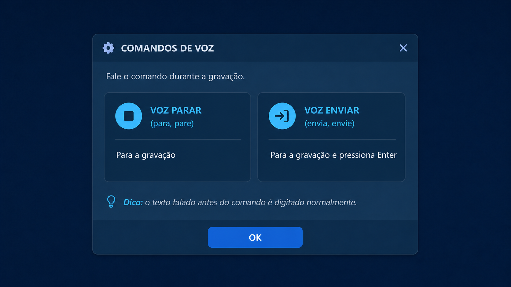
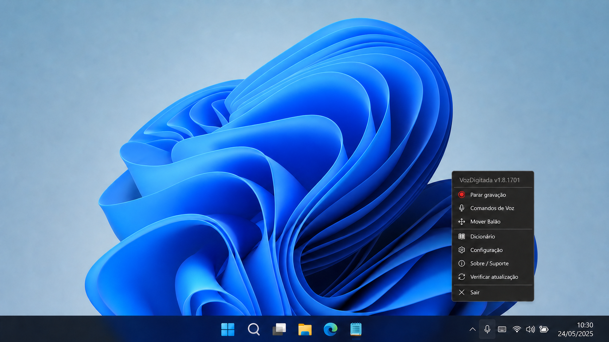
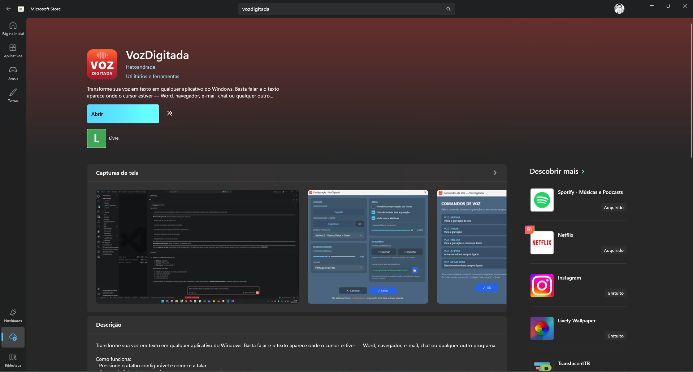
Reconhecimento de Voz
Captura sua voz e digita automaticamente no campo ativo de qualquer programa com precisão.
Atalhos de Teclado
Um atalho para gravar e parar, outro para gravar, parar e enviar (Enter automático). Totalmente configurável.
Comandos de Voz
Controle por voz: "Voz gravar", "Voz parar", "Voz enviar" e outros — sem tocar no teclado.
Microfone Sempre Ligado
Ative o microfone permanente e controle tudo por comandos de voz. Pode desativar temporariamente quando quiser.
Dicionário Inteligente
Corrija palavras que o reconhecimento erra e o app aprende. Exportar, importar e backup automático na nuvem.
Balão Flutuante Móvel
Um balão na tela indica o status da gravação. Arraste para qualquer posição — ele lembra onde você deixou.
Atualização Automática
O app verifica e baixa atualizações automaticamente. Sempre na última versão disponível.
Configuração Completa
Personalize atalhos, idioma, sensibilidade do reconhecimento e comportamento do balão indicador.
Inicia com Windows
Configure para iniciar automaticamente com o sistema, já com o microfone sempre ligado se preferir.
Sim! O VozDigitada digita no campo ativo de qualquer programa do Windows — navegadores, editores de texto, Excel, e-mail, ERPs, terminais e mais. Basta o cursor estar posicionado em um campo de texto.
O reconhecimento nativo do Windows pode usar o serviço online da Microsoft, conforme as configurações de fala do sistema. Se ele não responder, o VozDigitada usa uma contingência local; o modelo dessa contingência (aproximadamente 142 MiB) é baixado uma única vez e o áudio dela não é enviado para a internet.
100% gratuito, sem limite de palavras, sem assinatura, sem período de teste e sem anúncios. Você pode usar o quanto quiser, para sempre.
Você configura dois atalhos: um para gravar/parar normalmente, e outro que grava, para e envia (pressiona Enter automaticamente). Ideal para Visual Studio Code, Microsoft Teams, Bloco de Notas, campos de busca e qualquer programa — fale e envie sem tocar no teclado.
É um modo onde o microfone fica permanentemente ativo, aguardando comandos de voz. Você controla tudo falando: "Voz gravar", "Voz parar", "Voz enviar" — sem precisar tocar no teclado em momento algum.
Quando o reconhecimento de voz erra uma palavra, você cadastra a correção no dicionário. Na próxima vez, o app corrige automaticamente. Funciona com palavras individuais e frases de até 3 palavras. Você pode exportar, importar e fazer backup automático.
Sim! O VozDigitada funciona em português brasileiro.
O VozDigitada não coleta nenhum dado pessoal, não envia áudio para servidores e não possui telemetria. Todo o processamento é local. O código é transparente e o app está disponível na Microsoft Store.
⬇️ VozDigitada para Windows
Diagnostique seus drivers
em segundos.
O DriverStatus escaneia todo o hardware do seu PC, identifica dispositivos com problemas e sugere a melhor solução: Windows Update, driver oficial ou pesquisa online. Faz backup de drivers, cria pontos de restauração e facilita a interação com a IA.

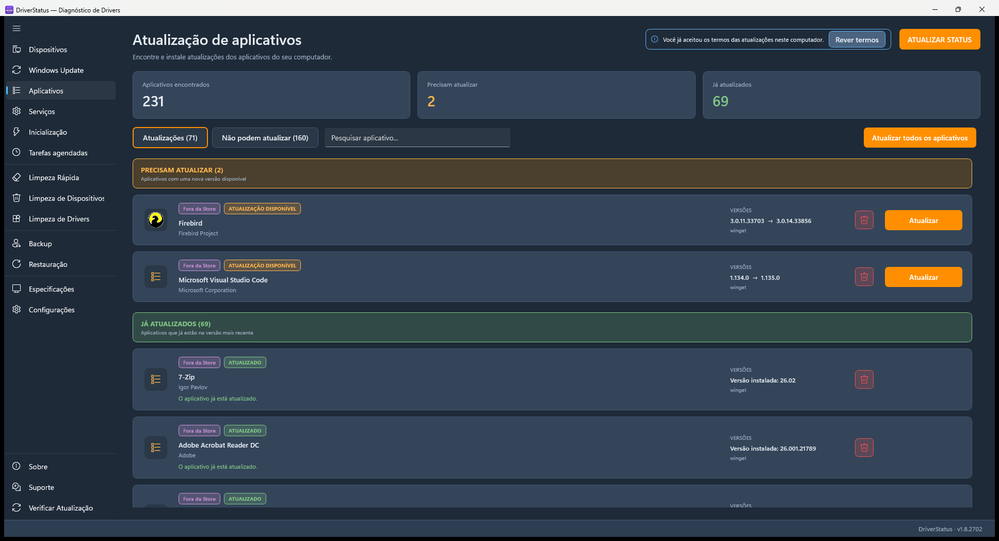
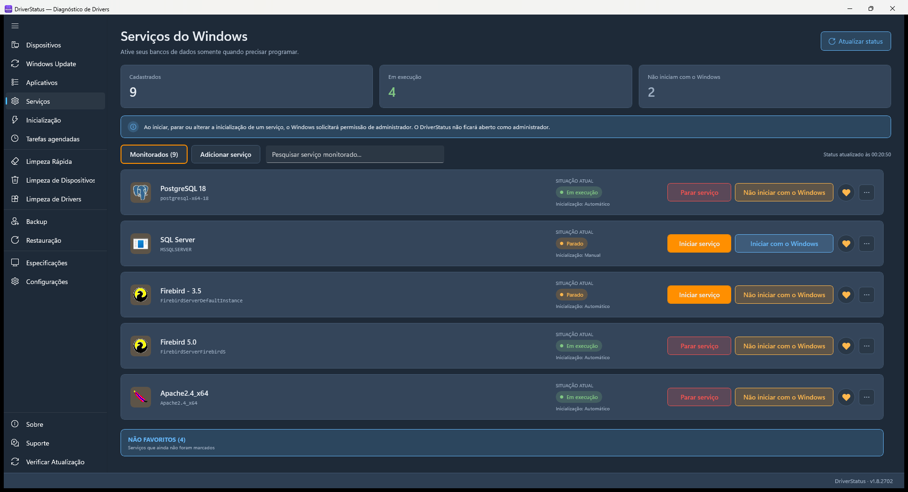
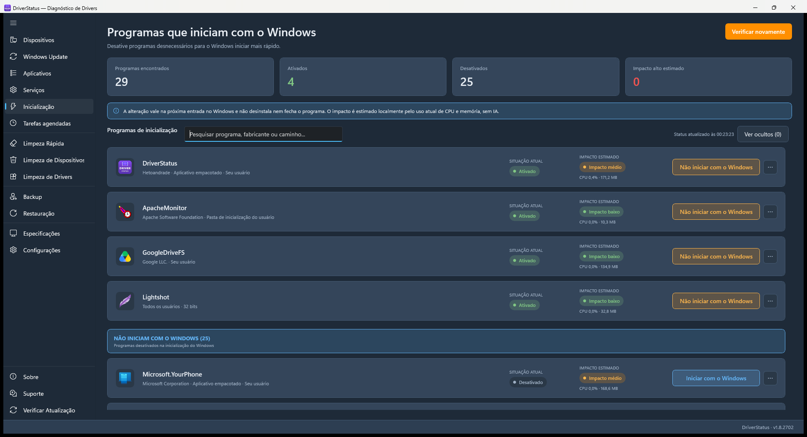
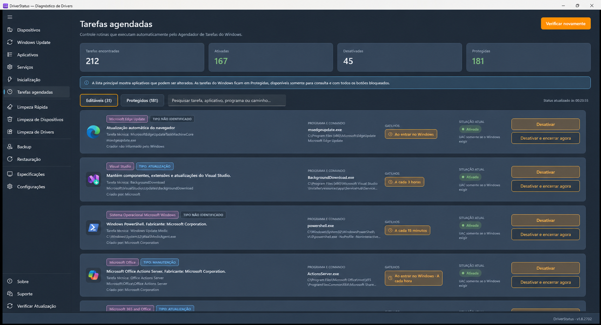
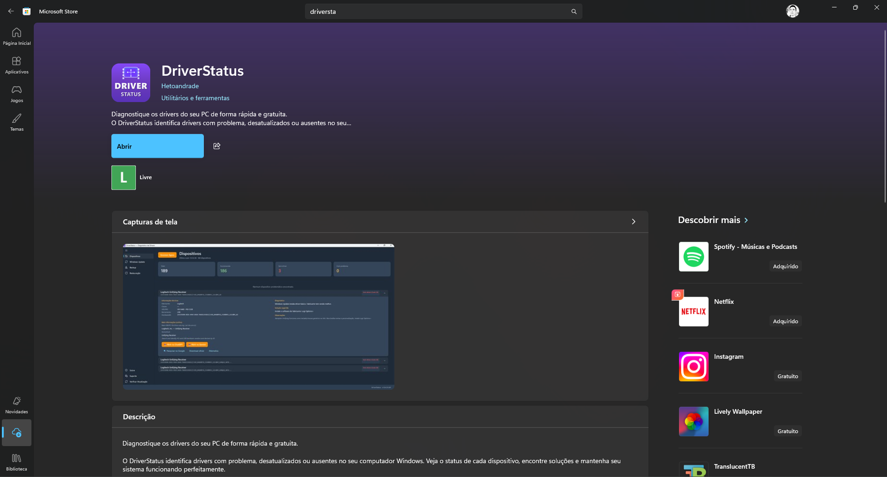
Scan Completo
Escaneia todo o hardware do PC via WMI. Identifica dispositivos sem driver, com falha ou com problemas.
Windows Update
Busca drivers disponíveis no Windows Update e instala com um clique. Cria ponto de restauração automaticamente.
Base de Conhecimento
Identifica dispositivos por VID/PID e sugere a melhor solução: driver oficial, Windows Update ou download direto.
Assistência por IA
Copia informações do dispositivo e abre o Google Gemini para análise inteligente. Sem custo de API.
Backup de Drivers
Exporte todos os drivers instalados para uma pasta. Restaure quando precisar com um clique.
Ponto de Restauração
Crie pontos de restauração do Windows antes de qualquer alteração. Segurança antes de tudo.
Consulta Online
Busca em bases USB e PCI internacionais para identificar dispositivos desconhecidos automaticamente.
Pesquisa Google
Gera pesquisa automática no Google com o nome do dispositivo e versão do Windows para encontrar o driver.
100% Local e Seguro
Não coleta dados, não envia informações. Todo o processamento acontece no seu computador.
Ele complementa. O DriverStatus faz um diagnóstico mais profundo, identifica dispositivos problemáticos, consulta bases online e sugere soluções — algo que o Gerenciador de Dispositivos não faz.
O scan básico funciona sem admin. Recursos avançados como Windows Update, backup de drivers e pontos de restauração pedem elevação de privilégios automaticamente quando necessário.
O DriverStatus usa o próprio Windows Update para instalar drivers — a mesma fonte que o Windows usa. Além disso, cria ponto de restauração antes de qualquer alteração.
O app copia as informações do dispositivo e abre o Google Gemini no navegador. Você cola com Ctrl+V e a IA analisa o problema. Sem custo de API, sem conta obrigatória.
Não. O DriverStatus é 100% local. Não envia nenhuma informação para servidores, não tem telemetria e não coleta dados pessoais.
⬇️ DriverStatus para Windows
Acesso remoto simples e protegido
para seus computadores.
O TelaDesk está sendo criado como uma alternativa própria ao AnyDesk: conecte por código ou convite, pela rede local ou internet, com permissões claras para controlar a tela, copiar textos e transferir arquivos.
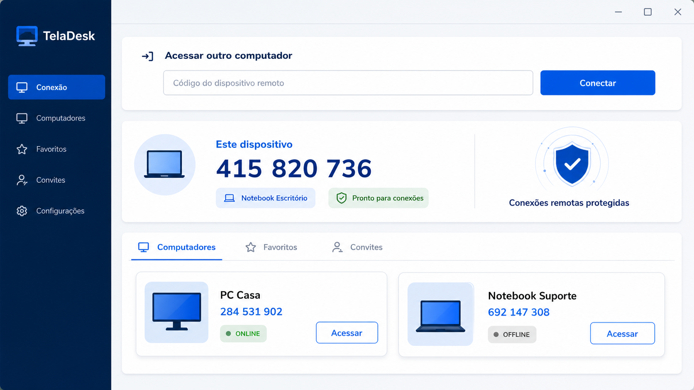
Acesso por Código
Digite o código do outro computador para iniciar uma conexão de forma simples.
Convites Temporários
Crie um convite de uso único para prestar ou receber ajuda sem acesso permanente.
Local ou Internet
Encontre computadores na rede local ou acesse de outro lugar quando precisar.
Sessões em Abas
Organize diferentes computadores e visualizações em uma única janela.
Permissões Claras
Escolha separadamente o controle de teclado e mouse, textos e arquivos.
Textos e Arquivos
Copie textos entre os computadores e transfira arquivos durante a sessão.
Em desenvolvimento. A interface e os recursos ainda podem mudar. O TelaDesk é um produto independente e não possui vínculo com o AnyDesk.
Organize o espaço do seu disco
com clareza e proteção.
O AjusteHD mostra como os discos e partições estão organizados antes de qualquer alteração. Transfira espaço, reduza, crie ou remova partições com revisão do resultado e confirmações em cada etapa.
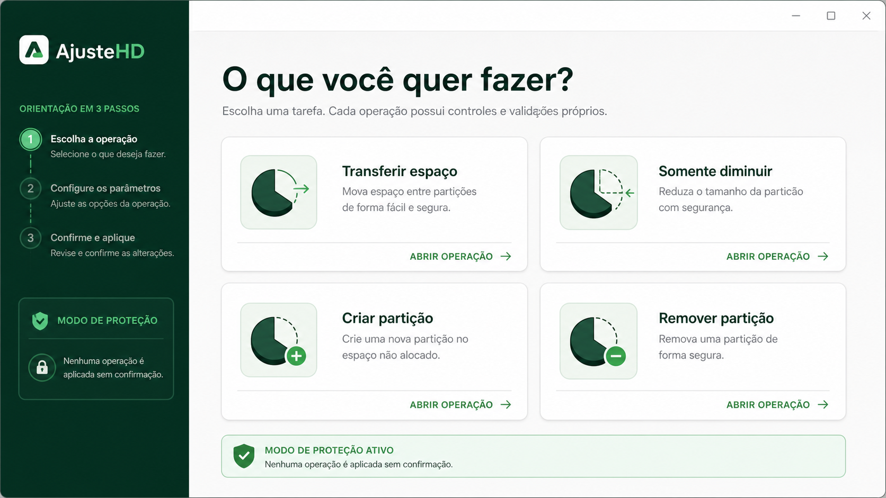
Visão dos Discos
Veja a organização real dos discos, partições e espaços não alocados.
Transferir Espaço
Diminua uma partição e aumente outra compatível imediatamente ao lado.
Somente Diminuir
Reduza uma partição e deixe o espaço não alocado para usar depois.
Criar Partição
Crie uma nova unidade escolhendo tamanho, nome, letra e formato.
Remoção Protegida
Remova partições de dados enquanto Windows, EFI e Recuperação permanecem bloqueados.
Revisão Antes de Aplicar
Compare o antes e o depois e confirme explicitamente cada operação.
Em desenvolvimento. A interface e os recursos ainda podem mudar antes do lançamento.
Uma conversa entre seus dispositivos,
não entre pessoas.
O CopieECole é como um WhatsApp para os seus próprios dispositivos: entre na mesma conversa pelo navegador e envie textos, links, fotos e arquivos para continuar no computador, celular ou tablet que estiver usando.
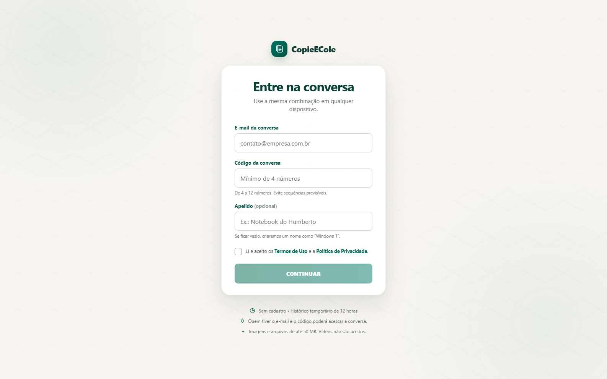
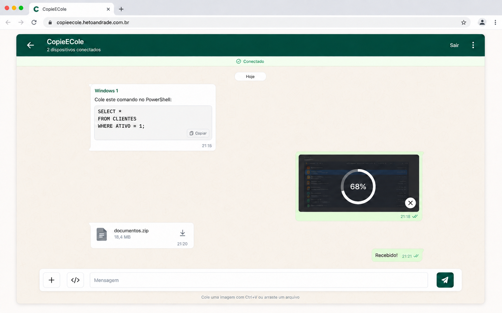
Conversas por Dispositivo
Use uma conversa como ponto de encontro para seus computadores, celulares e tablets.
Sem Cadastro
Entre com e-mail e código e mantenha um histórico temporário de 12 horas.
Textos e Códigos
Envie um texto ou trecho de código e copie no outro dispositivo com rapidez.
Links
Compartilhe endereços para continuar a navegação em outra tela.
Fotos e Arquivos
Transfira imagens e arquivos de até 50 MB. Vídeos não são aceitos.
Pelo Navegador
Acesse a conversa em diferentes tipos de dispositivo sem depender de uma única plataforma.
Disponível agora. Acesse o CopieECole diretamente pelo navegador. O CopieECole é um produto independente e não possui vínculo com o WhatsApp.
Softwares de
terceiros
que eu recomendo.
Aplicativos que eu mesmo uso e indico no dia a dia. Todos gratuitos para uso pessoal. Links diretos para os sites oficiais — nada modificado, nada com anúncios. Esses softwares não são desenvolvidos por mim — cada um tem sua própria licença e suporte.

AnyDesk
Acesso RemotoAcesso remoto rápido e leve. Uso pra dar suporte a clientes — instala em 1 minuto, gera um código de 9 dígitos e pronto. Grátis pra uso pessoal.
⬇️ Baixar do site oficial7-Zip
CompactadorCompactador de arquivos open-source. Suporta ZIP, RAR, 7z, TAR, GZ e mais. Substituto perfeito do WinRAR — grátis de verdade, sem "compre a licença" eterno.
⬇️ Baixar do site oficial
Notepad++
Editor de TextoEditor de texto turbinado. Abre arquivos grandes sem travar, syntax highlight pra dezenas de linguagens, find & replace com regex. O bloco de notas do Windows nem chega perto.
⬇️ Baixar do site oficialLightshot
Captura de TelaFerramenta leve para capturar uma área da tela em poucos cliques. Permite editar a imagem na hora e gerar rapidamente um link para compartilhar.
⬇️ Baixar do site oficialpgAdmin
Admin PostgreSQLFerramenta gráfica oficial pra administrar bancos PostgreSQL. Roda queries, edita tabelas, faz backup/restore, gerencia usuários. Open source — mantida pela própria comunidade do Postgres.
⬇️ Baixar do site oficialDBeaver Community
Gerenciador de BancosGerenciador universal de bancos de dados. Conecta ao PostgreSQL, MySQL, SQL Server, SQLite e muitos outros, com editor SQL, dados e diagramas.
⬇️ Baixar do site oficial